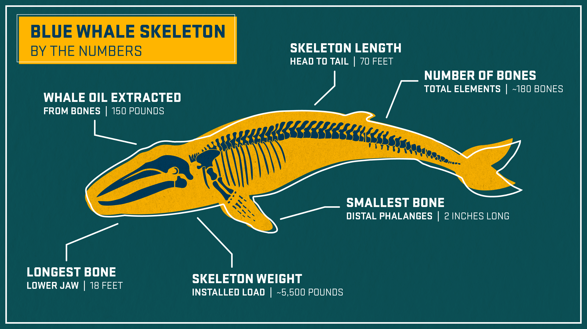
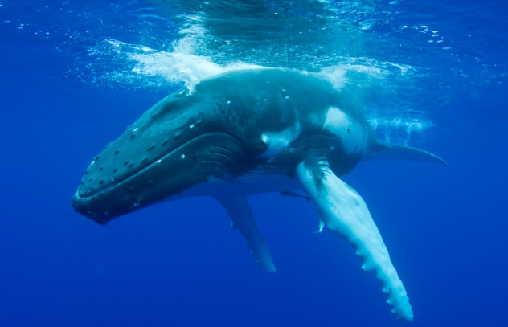

The Exhibit
Step inside the skeleton. Explore every bone of the ocean's largest creature.
Loading 3D Model
Drag to rotate · Pinch to zoom
Drag to rotate · Pinch to zoom
About the Specimen
Suspended in the grand hall of the Colombo National Museum, the blue whale skeleton stands as one of South Asia's most extraordinary natural history exhibits. Measuring over 27 metres in length, this specimen was recovered from the waters off Sri Lanka's southern coast and has captivated visitors since 1914. Its silent, towering presence is a testament to the immensity of life that once roamed the depths of the Indian Ocean — and a reminder of how little we have truly understood the ocean's greatest inhabitants.
The skeleton was carefully articulated and mounted over several years, preserving the natural curvature of the animal's spine. Each of the more than 200 bones tells a story — of feeding frenzies in cold Antarctic waters, of migrations spanning thousands of kilometres, and of a creature whose heart alone weighs as much as a small car. To stand beneath it is to confront the full scale of life on this planet in a way no photograph or film can replicate.
Blue whale bones are far from solid — they are highly porous and saturated with lipids, functioning as buoyancy aids in life. This oily interior made whale skeletons notoriously difficult to preserve; early museum specimens often became greasy and odorous decades after mounting.
The Colombo specimen's mandible alone stretches over five metres. The skull, which represents nearly a quarter of total body length, houses a rostrum broad enough for a person to lie flat across. Remarkably, blue whales have no teeth — the keratin baleen plates that once filtered krill have long since decomposed, leaving only the bony structures of the jaw.
Scientists can estimate a whale's age from its earwax plug — a layered column that accumulates throughout the animal's life much like tree rings. Chemical analysis of these plugs has also revealed hormonal surges, stress events, and even contaminant exposure over a lifetime.


For centuries, blue whales were the stuff of maritime legend. Sailors who encountered their vast, dark shapes at the surface mistook them for sea monsters or living islands. In Sri Lankan coastal tradition, the whale's breath — a vapour column rising six metres into the air — was thought to be the exhalation of a divine serpent guarding the ocean's depths.
Modern science has replaced myth with marvels no less astonishing. Research vessels off the Sri Lankan coast have documented blue whales producing calls as low as 14 hertz — below human hearing — that can travel thousands of kilometres through deep-ocean sound channels. The Colombo specimen may have communicated with whales as far away as the coasts of Oman or Madagascar.
Genetic studies have also revealed that the Northern Indian Ocean blue whale population is genetically distinct from those of the Antarctic and North Pacific, suggesting centuries of reproductive isolation shaped by the subcontinent's landmass.
Loading 3D Model
Drag to rotate · Pinch to zoom
The blue whale’s skull stretches over 5 metres and is one of the largest structures in the animal kingdom. Its broad, flat rostrum houses rows of baleen plates — keratin filters that strain millions of krill from each mouthful of ocean water.
Inside each flipper lie the same bones found in a human arm — humerus, radius, ulna and digits — radically remodelled by evolution. Up to 3 metres long, these paddle-like fins provide precise steering and stability at depth.
Around 64 vertebrae run the length of the blue whale’s body. The cervical vertebrae are fused — common to all cetaceans — while the massive lumbar and caudal vertebrae anchor the muscles that power the whale’s vertical tail-stroke.
Unlike fish, whales drive themselves with a vertical tail beat. The caudal vertebrae diminish progressively toward the flukes, ending in tiny chevron bones embedded in cartilaginous tissue. A single downstroke propels 150 tonnes forward by several metres.
Instead of teeth, the blue whale possesses up to 400 baleen plates hanging from its upper jaw. These keratin structures — the same material as human fingernails — act as a sieve, trapping up to 40 million krill in a single lunge-feeding event.